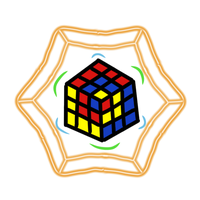

Меня зовут Правкин Даниил. Я являюсь студентом бакалавриата СПБГУ на Математико-механическом факультете, 2 курс.
Направление подготовки - программная инженерия.

Наиболее предпочитаемого предмета изучения нет, поскольку интересно всё (но обычно на это всё времени не хватает), но в целом интересуюсь предметами, которые содержат много аспектов и требуют долгого изучения (например операционные системы, компьютерные сети), а так же те, в которых есть научные стороны (например теория автоматов, теория вычислений). Имею некоторые хобби: чтение, езда на велосипеде/лонгборде, конструкторы и сборные модели, компьютерные игры, пазлы, головоломки, рисование, анимация.
Vortex - это проект с открытым исходным кодом для поддержки GPGPU на основе расширений RISC-V ISA.
Данная учебная работа направлена на получение первичных навыков работы с FPGA-стеком.
ПодробнееУчебный проект, направленный на изучение основ ООП. Результат работы - приложение, способное получать прогноз погоды с помощью OpenMeteo API и сохранять эти данные в кэш. Использованные технологии: Kotlin, Jetpack Compose, SQLite (Room), UI-тестирование, unit-тестирование.
Подробнее